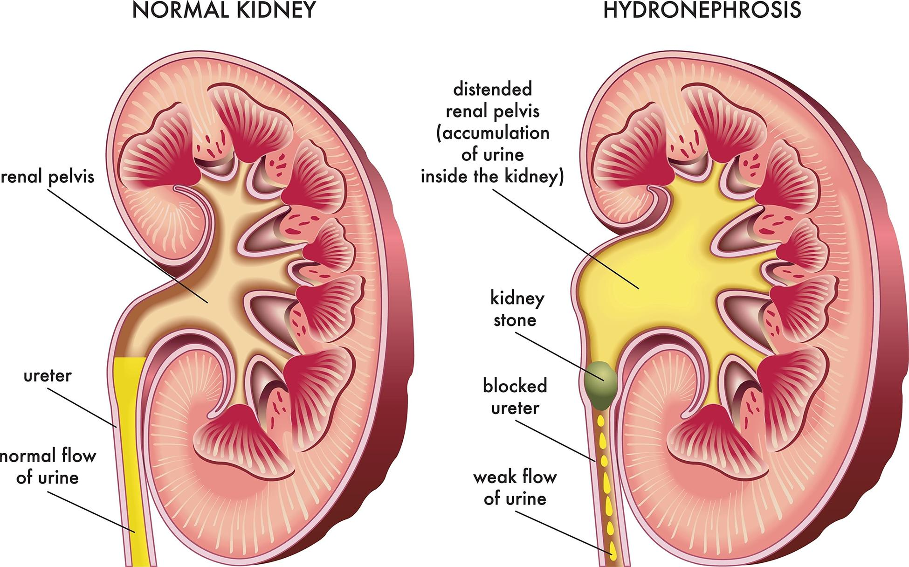
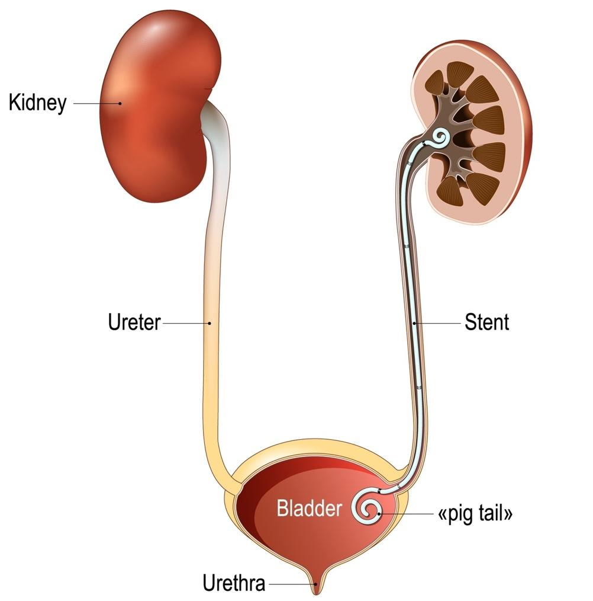

Hydronephrosis happens when one or both kidneys swell up because urine cannot drain the right way. The kidneys are organs in your back that help clean your blood and make urine. If urine backs up into the kidney, it can stretch and damage the kidney over time.

Hydronephrosis usually happens when something blocks or slows down the flow of urine. Some common causes are:
A kidney stone blocking the urine path
A urinary tract infection, or UTI, that causes swelling
An enlarged prostate in men
A narrow ureter, the tube that carries urine from the kidney to the bladder
A tumor or growth pressing on the urinary system
Nerve problems
An enlarged uterus during pregnancy
Symptoms can be sudden or develop slowly over time. You might have:
Pain in your back or side, usually near the ribs, or in the genitals or lower belly
Trouble urinating or needing to urinate more often
Feeling like your bladder is not empty
Blood in your urine
Fever or chills if there is an infection
Nausea or vomiting
During your visit, your care team may do:
A urine test to check for infection
Blood tests to check how well your kidneys are working
Imaging tests such as a special X-ray, ultrasound, MRI, or CT scan
A bladder scan to check how much urine stays in your bladder after you go to the bathroom

Treatment depends on what caused the problem. Your care team will help you feel better.
Some people may need a small tube called a stent or a drain to help urine flow if the blockage is bad.
Sometimes, surgery is used to remove a blockage by placing a tube through the skin directly into the kidney’s collecting system. This is known as a nephrostomy.
If a kidney stone is causing the blockage, a procedure may be done to break up the stone and remove it.
Pain medicine: You may get pain medicine such as acetaminophen, brand name Tylenol®, or a non-steroidal anti-inflammatory drug called an NSAID. Common NSAIDs include ibuprofen, brand name Advil® or Motrin®, and naproxen, brand name Aleve®. Tell your care team first if you take blood thinners, have a history of bleeding or stomach ulcers, or have a history of kidney or liver disease.
Antibiotics: If there is an infection, antibiotics will be used to treat it. If you have antibiotics, make sure to finish all of them. If you stop early, the infection may not go away and can become harder to treat. Call your care team if you have any problems with your medicine.
Drink water: It helps flush your kidneys and prevent stones or infection.
Eat fruits and veggies: They help reduce swelling and support kidney health.
Avoid salty foods: Too much salt can make swelling worse.
Stay active: Gentle walking helps your body heal.
Go to the bathroom often: Holding urine can make things worse.
Avoid heavy lifting: It can raise pressure in your belly and make kidney swelling worse.
Limit caffeine and alcohol: These can irritate your bladder and kidneys.
Call your care team if you:
Have pain in your lower back, side, or belly that does not go away or gets worse
Need to urinate much more often than usual, or have trouble starting or stopping your urine
Feel pain or burning when you urinate
Feel like you cannot fully empty your bladder
Have blood in your urine, which may mean it is pink, red, or brown
Have a fever over 100.4°F or 38°C that does not get better with medicine
Have nausea or vomiting that makes it hard to eat or drink
Have any questions or concerns about your symptoms or medicines
Get help right away if you:
Have severe pain in your back, side, or belly that comes on suddenly and is very strong
Cannot urinate at all or have not urinated in 8 hours
Have a fever over 100.4°F or 38°C with shaking, chills, and feeling sick
Have confusion, trouble staying awake, or fainting
Have vomiting that will not stop, and you cannot keep any fluids down
Have blood in your urine along with severe pain or fever
Have signs of severe dehydration, such as very dark urine, dry mouth, dizziness, or sunken eyes
Thank you for trusting us with your care. We are here to support you and want you to feel your best. Contact us with any questions.
IF YOU HAVE A MEDICAL EMERGENCY, CALL 911 OR GO TO THE EMERGENCY ROOM.
The information presented is intended for general information and educational purposes. It is not intended to replace the advice of your health care provider. Contact your health care provider if you believe you have a health problem.
Last updated May 2025
© 2025 Mytonomy, Inc. All rights reserved.